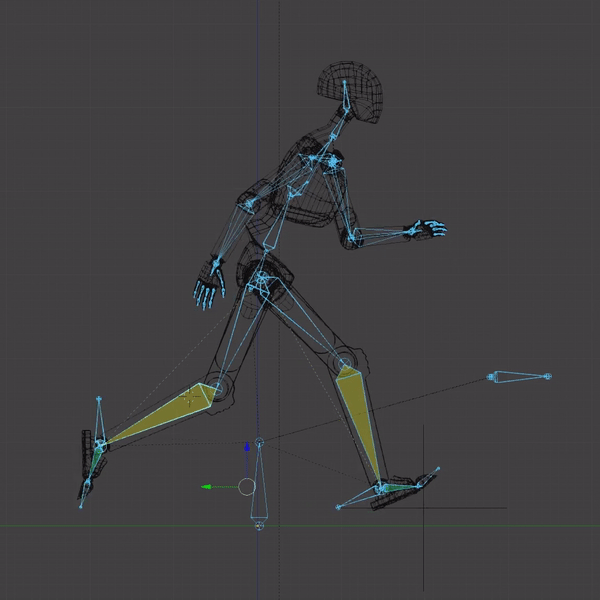
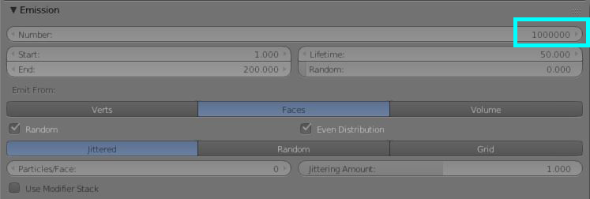
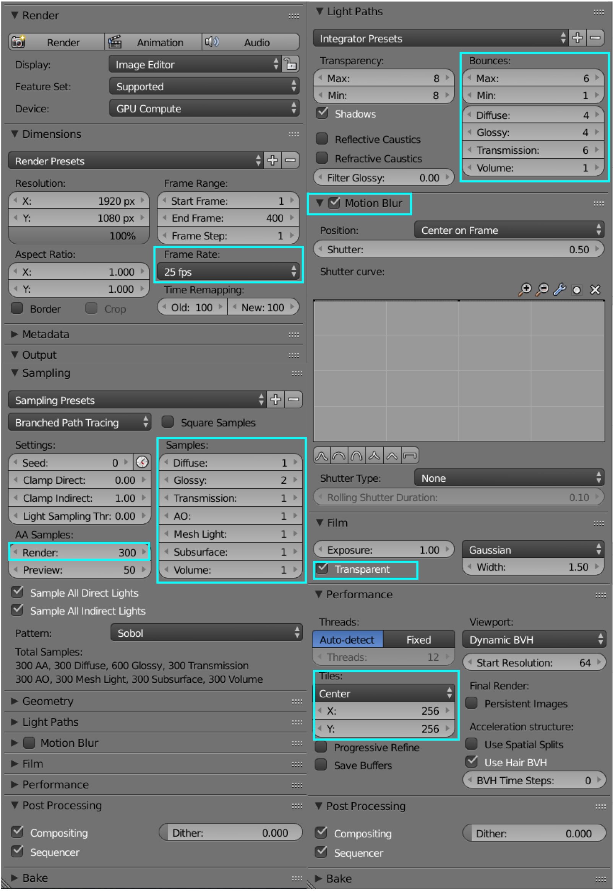

Dato l’argomento affrontato nel video, è stato fondamentale trovare un modo per comunicare le emozioni del personaggio utilizzando la mimica del corpo.
Dalla posizione delle mani e dall’inclinazione della testa alla falcata del passo, si è cercato di creare empatia. Il robot è diventato umano nei movimenti: respira, è indeciso, cammina a fatica.
Prima di cominciare ad animare sono stati girati dei video che riprendevano i movimenti scelti e sono stati in seguito utilizzati come riferimento per ricostruire ogni mossa.
Camminata Triste
La prima animazione di cui ci si è occupati è stata la camminata. L’obiettivo è stato trasmettere lo stato d’animo del robot, per sopperire alla mancanza di un volto in grado di convenire emozioni. Leggermente curvato, come se avesse un peso sulle spalle, trascina i piedi alzandoli poco da terra. La falcata è corta e il piede esita in fase d’appoggio: il corpo è tanto pesante che spostare la gamba in avanti è lungo e faticoso. Le braccia sono molli e compiono solo piccoli movimenti e il viso è rivolto verso il pavimento.
Uno strano suono
Quando sente il suono del cuore, il robot si guarda in giro. Dalla posizione iniziale, rannicchiato con le gambe al petto e le braccia strette attorno alle ginocchia, comincia a distendersi: si appoggia a una mano e si rialza.
Corsa
Una volta rialzatosi, il robot comincia a correre. La falcata diventa ampia, il viso è rivolto in avanti verso l’obiettivo. Sono state animate sia l’inizio della corsa sia la fine con il rallentamento e la fermata.

Ripararsi dalla luce
Appena si ferma davanti al cerchio di particelle con il cuore, un lampo di luce acceca il robot. La sorpresa lo sbilancia e fa un mezzo passo indietro. Porta subito il braccio davanti alla faccia e ruota il bacino per dare fianco. Quando la luce scompare guarda circospetto cosa è successo, alzando di poco la testa. Soltanto dopo essersi reso conto che va tutto bene abbassa il braccio e si rimette dritto.
Camminata incerta
Il terzo tipo di passo che è stato animato è la camminata incerta. Il robot si trova davanti al cuore e deve prendere coraggio per avvicinarsi. Stringe il pugno e procede. Il primo passo è esitato. Il corpo, leggermente inclinato, dà il fianco: non sa cosa aspettarsi e si protegge, tenendo il braccio destro più avanti. Non solo la paura, ma anche la curiosità caratterizza questo momento della storia: anche la testa si inclina e si gira, come per guardare meglio.
Verso il cuore
La curiosità spinge il robot a voler toccare il cuore. Non è sicuro di quello che sta facendo ed esita. Allunga il braccio ma si ritrae dopo poco. Riprova, ma anche questa volta cambia idea: più deciso, si abbassa anche il gomito. Dopo un attimo di reticenza si convince e allunga nuovamente la mano. Le dita sono morbide ed è portato avanti l’indice che non si distende mai rigido. Appena entra in contatto con il cuore questo si rompe e velocemente chiude le dita, flette il gomito e ritira la mano vicino alla spalla.
Disperazione
Una volta sciolto il cuore il robot si tira leggermente indietro per la sorpresa, dando ancora una volta il fianco. Sconvolto, si accascia davanti alla pozza.
Il Path
In questa fase, oltre alla costruzione del movimento, ci sono state diverse difficoltà nel far seguire al robot un percorso evitando l’effetto di slittamento.
Le animazioni di camminata e corsa sono state infatti realizzate a ciclo sul posto. Nel momento in cui si è reso necessario trasformare il ciclo in uno spostamento vero e proprio sono stati incontrati due ostacoli.
Inizialmente il robot anziché spostarsi si scomponeva. Per risolvere è stato aggiunto un control bone all’armatura legato ai principali snodi tramite relazione child-parent: se si muove il control bone tutto il robot lo segue senza cambiare la posa.
Il principale errore che abbiamo riscontrato è stato l’effetto pattinaggio. Impostando solo un keyframe di partenza e di arrivo il robot scivola sulla superficie. È stato necessario tornare indietro più volte per sistemare l’animazione base e per alcune camminate la posizione è stata aggiustata fotogramma per fotogramma.
Per essere più precisi è stato adoperato un empty plain axis come segnaposto per capire dopo il piede si sarebbe dovuto trovare al frame successivo, prendendo a riferimento il piede appoggiato a terra e quindi fermo. Con le camminate più regolari il processo è stato più semplice, mentre con la camminata incerta che esita sul primo passo è stato più impegnativo.
Animazione Pozza
Il primo effetto realizzato ha interessato i fluidi per la realizzazione di una pozza. Abbiamo utilizzato sul pavimento il wave modifier per permettere la creazione del movimento ondulatorio della superficie dell’acqua. Dopo abbiamo applicato il dynamic paint alla superficie creando un canvas nuovo e sostituendo il tipo di superficie con il wave.
Goccia e Robot
Abbiamo dopo applicato lo stesso effetto dynamic paint anche alla goccia e al robot creando dei brush che potessero influenzare la superficie. In seguito abbiamo animato l’interazione della goccia e il robot con l’acqua.
Animazione e Titolo
Il titolo, fatto di fumo, è stato animato con l’effetto smoke. Si è voluto ritrarre il titolo come qualcosa di instabile e volatile come le emozioni del personaggio. Dopo aver scritto il titolo abbiamo applicato l`effetto di smoke con la risoluzione di 150 divisioni per una visualizzazione migliore. L’adaptive domain ha permesso una renderizzazione piu veloce: il fumo viene simulato non nella sua totalità ma soltanto all’interno del dominio.
Dopo aver applicato l’effetto si è notato un problema di leggibilità. Per migliorare la qualità del testo è stato applicato al flow source del domain un sistema di particelle che ha permesso una effettiva visualizzazione della parola.
Per evitare all’inizio lo spostamento veloce dello smoke è stata impostata una differenza di temperatura molto bassa: 0.1.
Turbulenza
Per far sì che il titolo si dissolvesse con il passaggio del personaggio abbiamo usato la turbulenza alla quale è stato fatto seguire lo stesso percorso del robot.
Non volendo disturbare gli altri elementi della scena, è stato impostato il falloff a un massimo di 1.000 in modo che tutto ciò che si trovava al di fuori del campo non ne venisse influenzato. In questo caso anche la forza rispecchia il falloff perché è più forte al centro e in diminuzione man mano che si arriva ai bordi.
Materiale
È stato applicato allo smoke un materiale molto semplice utilizzando il volume absorption e il volume scatter uniti grazie all’add shader.
A causa dello sfondo scuro è stato necessario rendere il fumo più luminoso utilizzando un emission shader insieme a un transparent shader.
Per evitare che la luminosità del fumo influenzasse altri elementi della scena abbiamo utilizzato come fattore un light path camera ray.
Animazione Cuore
Per realizzare l’esplosione del cuore di ghiaccio è stato utilizzato l’effetto rigid body. Una volta generato il cuore frammentato attraverso l’add-on “cell fracture” è stato applicato il rigid body senza la gravità. Per non rendere uniforme la frammentazione abbiamo utilizzato il grease pencil per disegnare sopra la forma dei pezzi irregolari.
Frammentazione Cuore
Per far sì che il cuore si rompesse abbiamo creato un altro oggetto “bullet” a cui abbiamo applicato il rigid body e la collision. Il problema a questo punto è stato che l’oggetto, pur animato, non si poteva muovere a causa del rigid body. La soluzione a cui si è arrivati è stata animare la funzione animated dentro a rigid body. Andando al penultimo frame della animazione abbiamo spuntato la proprietà animated mentre nell’ultimo frame l’abbiamo disattivata.
Dettagli
Per rendere più reale l’animazione abbiamo applicato un sistema di particelle ai pezzi di cuore situati nel centro per simulare i frammenti più piccoli che si formano quando un oggetto di vetro si spacca. A questi pezzi è stato applicato il modifier collision.
Cuore d’acqua
Il cuore di ghiaccio contiene al suo interno un altro cuore realizzato con un fluido e che si libera una volta che il suo contenitore si è rotto. Per simulare la rottura abbiamo dovuto creare un altro oggetto come ostacolo del fluido e animarlo nello stesso modo con cui è stato animato il bullet del cuore.
Animazione Lacrima
Nell’ultima scena il personaggio si lascia andare e comincia a piangere. Per realizzare l’animazione della lacrima che scorre sul viso abbiamo optato per non utilizzare un fluido visto che sono più difficili da controllare e richiedono più tempo di renderizzazione. Abbiamo invece utilizzato una curva di bezier collegata a due altre curve che hanno funzionato come taper e come bevel. Dopo abbiamo animato il taper e dato alla curva un materiale simile all’acqua.
Animazione Cerchio di energia
Il cuore è racchiuso all’interno di un cerchio di energia. Per la sua realizzazione sono state usate delle particelle che si muovono all’interno di un dominio a forma di prisma dodecagonale con basi convesse. Dopo aver azzerato la forza di gravità, sono stati posti al centro del dominio dei campi di forza: con il vortex abbiamo fatto seguire un andamento a spirale, mentre grazie all’harmonic field, di cui sono state applicate due versioni, le particelle si muovono a comporre la forma a cerchio. Infine è stata aggiunta la turbolenza. Per il render finale sono state utilizzate 1.000.000 particelle.
Ogni particella è stata modellata a partire da una icosfera con la funzione di emitter. Il materiale applicato al genitore influenza quindi tutta la struttura di energia. Per ottenere la sfumatura viola che è sempre più luminosa più ci si avvicina al centro dell’animazione è stato applicato un color ramp con il node editor. Per evitare di mostrare la struttura del dominio si è partiti con il colore del background del mondo: in questo modo le particelle più lontane dal cerchio non vengono mostrate. Per aumentare la luminosità è stato alzato il valore di strenght dell’emissione.
Come per le lucine, l’effetto glow è stato applicato in post-produzione con After Effects.

Render
Per riuscire a renderizzare tutto il materiale abbiamo utilizzato 6 computer, dividendo i file per rendere il processo più veloce. Abbiamo anche deciso di dividere gli oggetti in layer diversi, renderizzandoli separatamente con lo sfondo transparente per permettere il montaggio sucessivo.
Per i render in generale abbiamo utilizzato l’impostazione riportata a fianco. Nel light path abbiamo diminuito i valori massimi e minimi di bounces per controbilanciare l’ambiente scuro e abbiamo aumentato solo i bounces individuali in base alle necessità di ogni scena. Inoltre abbiamo utilizzato il motion blur per le scene in movimento.
Per il calcolo è stata utilizzata la GPU e si è tenuto come base il numero di samples a 300 con i tiles di 256x256. La scena con il titolo è stata la più pesante da calcolare, sia per la presenza del fumo sia per l’elevato numero di frame (400), e ha richiesto quattro giorni di renderizzazione su due computer.
La velocità di riproduzione del filmato finale esportato è di 25 frame al secondo.

Renderizzare l’acqua
Per le scene con l’acqua sono stati cambiati i settaggi per ottenere una risoluzione migliore. In questo caso i samples della transmissioni sono stati alzati. È stato alzato anche il numero di bounces per la transmissione e sono stati diminuiti gli effetti glossy e diffuse.